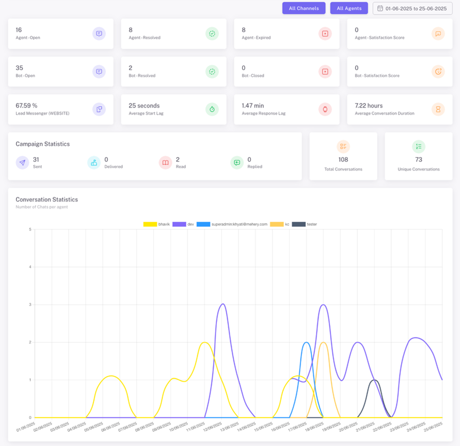

🌟New Release: Introducing Insights360 for Smarter Communication Analytics
By Kershasp Carnac on July 14, 2025
At Mehery Soccom, we're constantly evolving to help businesses communicate better, smarter, and faster. Our latest release brings
powerful analytics and smarter tracking
features that take customer engagement to the next level.
We’re excited to unveil two major enhancements for our
Lite and Enterprise users:
Let’s dive into what’s new and how it can supercharge your business workflows.
📊 Insights360: Powerful Analytics at Your Fingertips
Insights360 is our newly launched dashboard module that provides a 360° analytical view of your organization’s performance across customer engagement, automation, and agent productivity.
🔍 What Can You Track with Insights360?
🔹 Organisational Performance Overview
🔹 Agent Analytics
Monitor individual agent performance with precision:
This helps you identify high performers as well as coach poor performers towards enhancing their performance.
🔹 Campaign Statistics
Get channel-wise visibility into campaigns:
📈 With Insights360, your entire team can stay aligned, informed, and accountable.
🔁 Campaign ID API: Smarter, Reusable Campaign Tracking
We’re also rolling out the Campaign ID API – a developer-friendly enhancement that helps track and group outbound campaigns easily.
💡 Key Benefits:
Perfect for businesses running multiple outbound messages daily and looking to track campaign effectiveness across time, templates, and channels.
✅ Why This Release Matters
This update equips your team with deeper insights and better control over communication performance:
🔓 Access Now
Insights360 and Campaign ID API are available exclusively for Lite and Enterprise subscribers.
👉 Want to explore how this can benefit your business?
📩 Write to us at sales@mehery.com or book a personalized demo today.
Stay smart. Stay ahead. Stay connected with Mehery Smart Conversations.